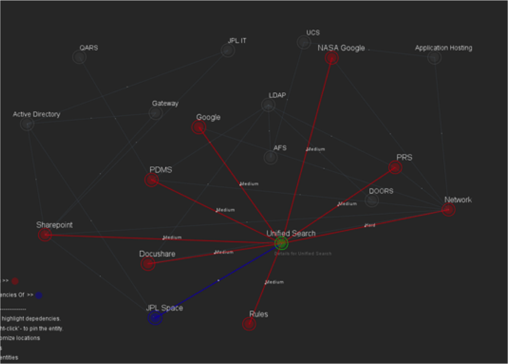

Humanizing Data through Visualizations
Cal Poly Pomona - May 2014
Jeremy Arca
Agenda
- Introduction
- Recent Work
- Tools
Data Visualization
Process

Ben Fry
Favorites

Charles Minard's Napolean's March

Jon Snow's Cholera Outbreak Map

Florence Nightingale's Causes of Mortatlity
Jer Thorp's Just Landed
Recent Work
Help Desk Calls
- 4 million calls in the past 7+ years
- 2 iterations
- Sentiment Analysis
Iteration 1 (help desk cals)
Iteration 1 (help desk cals)
Iteration 1 (help desk cals)
Iteration 2 (help desk cals)
GitHub Collaborations
- 100+ repositories
- 20~ organizations
Demo
JPL IT Application Dependencies
Iteration 1
Iteration 2
Iteration 3
Earth Science / Webification
Open DemoResources
Data Processing- iPython Notebook / Anaconda
- Standford's Data Wrangler
- Your favorite scripting language (node.js, python, perl, etc...)
Resources 2
Data Visualization Frameworks- D3.js
- Processing.org / Processingjs.org
- IBM Many Eyes
- Plot.ly -http://plot.ly/